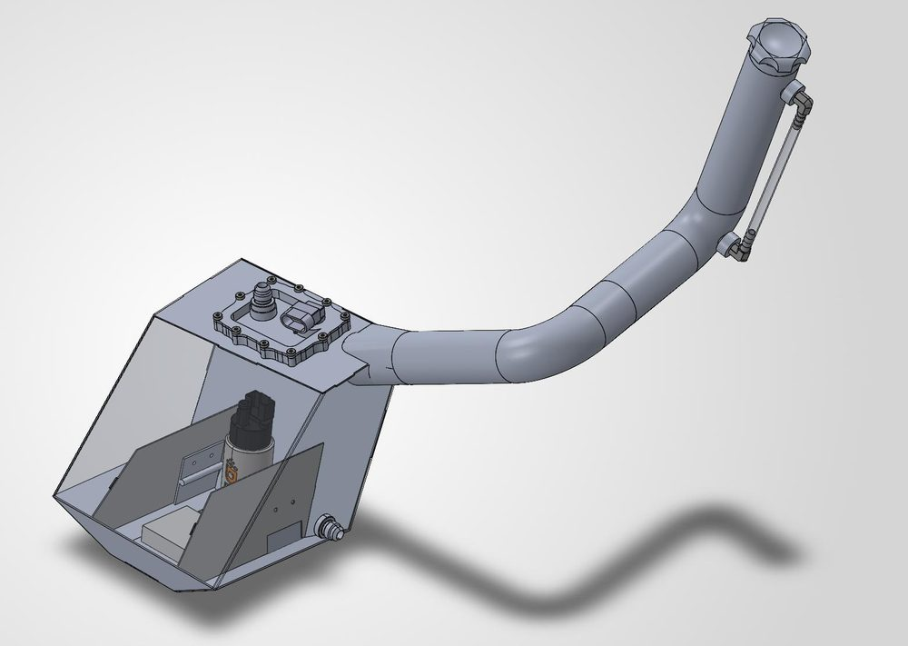

Fuel tank
- Right-sized the tank from 5.6 L to 4 L, an 8% margin over the 3.676 L used in Endurance 2026, while meeting fueling requirements under all operating conditions.
- Cut mass from 1,200 g to 726 g with thinner-gauge aluminum (0.050″ vs 0.063″) and folded, tabbed sheet-metal construction.
- Internal trap doors and baffles keep fuel at the pump. Validated fuel pressure with as little as 0.2 L remaining.
40%lighter
4 Lcapacity
0.2 Lvalidated minimum